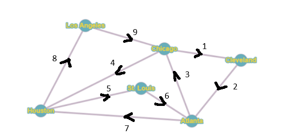

← Back to main page
Shown Work
Question 1:
- Percentages: 55%, 79%, 61%, 86%, 75%
-
Mean: 55% + 79% + 61% + 86% + 75% = 356
356 / 5 = 71.2%
The Mean is 71.2%
Median: 55%, 61%, 75%, 79%, 86%
The Median is 75% as its in the middle of all the other
percentages.
Mode: There is no mode.
-
Data: 55, 79, 61, 86, 75
1. Find the Mean (x̄)
Based on question 1b we know that the Mean is 71.2%
2. Subtract the Mean and Square Each Difference
-
(55 − 71.2)² = 262.44
(79 − 71.2)² = 60.84
(61 − 71.2)² = 104.04
(86 − 71.2)² = 219.04
(75 − 71.2)² = 14.44
3. Add the Squared Differences
-
Sum = 262.44 + 60.84 + 104.04 + 219.04 + 14.44
Sum = 660.80
4. Divide by (n − 1) to Get the Sample Variance
-
Sample Variance = 660.80 / (5 − 1)
Sample Variance = 660.80 / 4
Sample Variance = 165.20
5. Take the Square Root to Get the Sample Standard Deviation
-
Sample Standard Deviation = √165.20
Sample Standard Deviation ≈ 12.85
Final Answer: The sample standard deviation is
12.85.
Question 2
-
Given:
-
Mean delivery time: μ = 15.5 minutes
Standard deviation: σ = 2 minutes
Time of interest: X = 20 minutes
Step 1: Compute the Z-score
-
The Z-score formula is:
Z = (X − μ) / σ
-
Substitute the values:
Z = (20 − 15.5) / 2 = 4.5 / 2 = 2.25
Step 2: Use the Standard Normal Table
-
The table gives the area to the left of Z = 2.25:
P(Z < 2.25) ≈ 0.9878
Step 3: Find the Area to the Right
-
We want delivery times greater than 20 minutes:
P(Z > 2.25) = 1 − 0.9878 = 0.0122
Final Answer:
-
About 1.22% of delivery times are greater than 20
minutes.
-
Percentage greater than 20 minutes: 1.22%
Total deliveries: 2500
Calculation:
Final Answer:
You would expect about 31 deliveries to have a time
greater than 20 minutes.
Question 3:
Consider the graph: (answer)

-
Chicago, Cleveland, Atlanta, St. Louis, Houston, Los Angeles, Back to
Chicago.
Question 4:
Using borda count to solve.
1st place = 4 points
2nd place = 3 points
3rd place = 2 points
4th place = 1 point
|
Number of Voters
|
| Place |
260 |
340 |
170 |
230 |
| 1st |
K |
M |
M |
K |
| 2nd |
C |
C |
H |
H |
| 3rd |
H |
H |
C |
C |
| 4th |
M |
K |
K |
M |
Calculations
K = 4(490)+3(0)+2(0)+1(510) = 2470 Points
M = 4(510)+3(0)+2(0)+1(490) = 2530 Points
C = 4(0)+3(600)+2(400)+1(0) = 2600 Points
H = 4(0)+3(400)+2(600)+1(0) = 2400 Points
Cassandra (C) Wins with 2600 Points
Question 5:
-
To find how many different possibilities there are, we will have to
multiply all the options together, for main dish we had 21 options,
for sides there was 9 options and for drinks there was 53 options.
-
to get the answer you would do 21 x 9 x 53.
The total number of possibilities would be 10017.
-
Now that we are adding another option to the possibilities, the number
would change. How we would get that new number of possibilities is by
doing the same thing but also multiplying the number of desserts (26)
-
The new number of possibilities would be 21 x 9 x 53 x 26
We would now have 260442 possibilities, that's 250425 new
possibilities just by adding 1 new option.
Question 6:
Refer to The main page (index.html) for the
work given in this question.
Question 7:
- there is no work to show for A
-
To find the maximum home price we must multiple our annual income by
3, since our annual gross income is $80,000, we will multiply it by 3
to get the following answer.
-
Since the house we are looking to buy only costs $179,900, and the
maximum home price we can afford comfortably is $240,000 our house is
within the maximum home price guidelines.
-
To find our monthly payment we must write out our formula as so.
M = 143,920 ·
0.0035416667 (1 + 0.0035416667)360
(1 + 0.0035416667)360 − 1
-
Using the formula, our estimated monthly payment would be around
$708 per month.
Question 8:
Refer to The main page (index.html) for the
work given in this question.